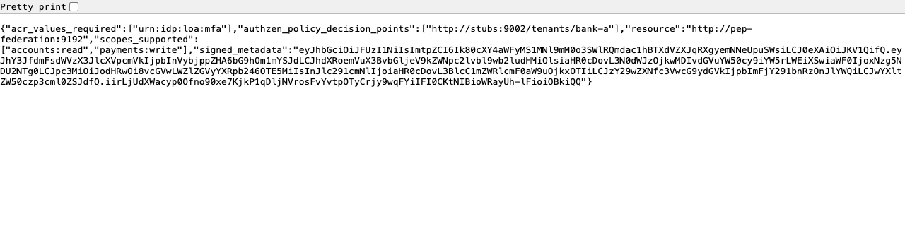
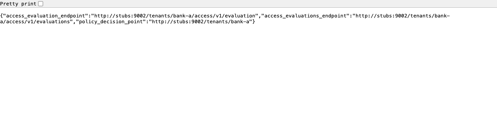

coaz-pep
The engine every other surface leans on. One binary serves Envoy's external-authorization gRPC and an HTTP check API over the same enforcement core, and it is the only component that resolves OpenID Federation trust chains, verifies DPoP proofs and evaluates COAZ tool-call mappings. Service-wide settings are environment variables; per-route settings arrive with each request.
What it is
- Envoy ext_authz on
:9191(gRPC,envoy.service.auth.v3.Authorization/Check). Envoy, Istio and agentgateway attach it; per-route knobs arrive ascontext_extensions. - HTTP check API on
:9192.POST /v1/mcp/checktakes the same knobs as aconfigobject; the Kong plugin and the PingAccess rule delegate to it, and the Node SDK can.POST /v1/dpop/verifychecks a sender constraint on its own.GET /healthz. - The resource's well-known documents, on the same HTTP port, when the PEP is configured as the resource's federation entity.
What it enforces: token presence and validation, the RFC 9449 sender constraint, RFC 9470 step-up and login challenges, REST and MCP request mapping to AuthZEN, per-tool-call COAZ authorisation, PDP discovery in four modes, ordered policy layers with per-layer failure modes, and forwarding the resource's own requirements to the PDP without judging them.
Run it
go build ./... && go test ./...
docker build -t coaz-pep core/
docker run -p 9191:9191 -p 9192:9192 \
-e AUTHZEN_URL=https://pdp.bank.example \
-e AUTHZEN_API_KEY=… \
-e CHECK_API_TOKEN=… \
coaz-pepA production-shaped service, as a compose service. Every variable is explained in the reference below; the values here are a bank API fronted by a gateway, discovering its PDP from the federation, holding the key for its own federation face.
services:
coaz-pep:
image: ghcr.io/id-partners/coaz-pep:latest
environment:
# the static PDP: always the fallback, the only PDP that gets the key
AUTHZEN_URL: https://pdp.bank.example
AUTHZEN_API_KEY: ${AUTHZEN_API_KEY}
# the HTTP check API is reachable by Kong / PingAccess: authenticate it, bound what it may fetch
CHECK_API_TOKEN: ${CHECK_API_TOKEN}
MCP_UPSTREAM_ALLOWLIST: https://mcp.bank.example/mcp
# validate tokens before their claims are used
ACCESS_TOKEN_JWKS_URL: https://as.bank.example/jwks
ACCESS_TOKEN_ISSUER: https://as.bank.example
ACCESS_TOKEN_AUDIENCE: https://api.bank.example
USER_TOKEN_AUDIENCE: https://app.bank.example
# discovery: the federation's word, bounded
PDP_DISCOVERY: federation
PDP_METADATA_TTL: 5m
RESOURCE_METADATA_ALLOWLIST: https://api.bank.example,https://mcp.bank.example
PDP_ALLOWLIST: https://pdp.bank.example,https://estate-pdp.bank.example
FEDERATION_TRUST_ANCHORS_FILE: /etc/coaz-pep/anchors.json
FEDERATION_FETCH_ALLOWLIST: https://federation.example
FEDERATION_MAX_PATH_LENGTH: "2"
# an estate PDP first, advisory; then whoever the resource's metadata names
PDP_LAYERS: https://estate-pdp.bank.example fail-open, resource
PDP_FAIL_MODE: closed
# this PEP is the federation face of the API it fronts
FEDERATION_ENTITY_ID: https://api.bank.example
FEDERATION_ENTITY_KEY_FILE: /etc/coaz-pep/entity-key.json
FEDERATION_AUTHORITY_HINTS: https://federation.example
volumes:
- ./anchors.json:/etc/coaz-pep/anchors.json:ro
- ./entity-key.json:/etc/coaz-pep/entity-key.json:ro
ports: ["9191:9191", "9192:9192"]Environment reference
Every variable the binary reads. A blank default means the setting is off or unset; a warns mark means startup logs a warning when it is unset, because the safe value is one the operator has to choose.
Core
| Variable | Default | Meaning |
|---|---|---|
AUTHZEN_URL required | — | The static PDP's base URL, e.g. https://pdp.bank.example. With discovery off the AuthZEN default paths are appended; with discovery on it is the fallback every mode ends at, and the one PDP that receives AUTHZEN_API_KEY. A trailing slash is trimmed. |
AUTHZEN_API_KEY | — | Sent as Authorization: Bearer to AUTHZEN_URL only. A discovered PDP never receives it. |
PORT | 9191 | The ext_authz gRPC port. Dual-stack. |
HTTP_PORT | 9192 | The HTTP check API port, also where the well-known documents are served. |
HTTP_ADDR | all interfaces | Bind address for the HTTP port, e.g. 127.0.0.1 when only a co-located gateway should reach it. |
COAZ_DISCOVERY_TTL | 60s | How long a discovered tools/list is reused for COAZ mappings. A Go duration. |
PDP_TLS_INSECURE | false | true skips TLS verification on PDP calls. Demo only. |
Check API security
The gRPC port takes its per-route configuration from the gateway's own config. The HTTP check API is different: the caller supplies config.mcp_upstream_url and the authorization header, and the PEP fetches that URL with that header. Unbounded, that is a server-side request forgery and credential-relay primitive. Both guards are off by default so no existing deployment breaks, and both warn at startup when unset.
| Variable | Default | Meaning |
|---|---|---|
CHECK_API_TOKEN | unset, warns | Shared secret callers must present as a bearer on /v1/mcp/check and /v1/dpop/verify. Kong sets it as coaz_api_key, PingAccess as coaz_api_key, the Node SDK as delegate.apiKey. |
MCP_UPSTREAM_ALLOWLIST | unset, warns | Comma-separated prefixes a caller-supplied mcp_upstream_url may match. Matched on scheme, host and path prefix against the parsed URL, so https://mcp.example.com does not admit https://mcp.example.com.evil.test. |
Token validation
The COAZ-MCP binding requires the access token to be validated before its claims are used. Configured, a token that fails verification is a 401 invalid_token, and an X-User-Token that fails yields no claims, so the step-up and consent gates it feeds close rather than open. Unconfigured, tokens are decoded only and startup warns.
| Variable | Default | Meaning |
|---|---|---|
ACCESS_TOKEN_JWKS_URL | unset, warns | JWKS to verify the access token's signature (ES256/384/512, RS/PS256/384/512). alg: none and unknown kid are refused. Cached ten minutes, refreshed on an unknown kid at most every 30 seconds. |
ACCESS_TOKEN_ISSUER | — | Expected iss. Unset, the issuer is not checked. |
ACCESS_TOKEN_AUDIENCE | — | Expected aud, as a string or a member of an array. |
USER_TOKEN_JWKS_URL | the access-token JWKS | JWKS for X-User-Token, whose claims drive user_scope, user_acr, authorization_details and the consented-amount cap. |
USER_TOKEN_ISSUER | the access-token issuer | Expected iss for X-User-Token. |
USER_TOKEN_AUDIENCE | — | Expected aud for X-User-Token. |
PDP discovery
| Variable | Default | Meaning |
|---|---|---|
PDP_DISCOVERY | off | off: the static PDP, default paths, no HTTP. authzen: read AUTHZEN_URL's /.well-known/authzen-configuration. resource: read the route's resource's RFC 9728 document for authzen_policy_decision_points, then that PDP's metadata; fall back to static. federation: resolve the resource's trust chain to a configured anchor and read the resolved oauth_resource metadata; never consult the resource's own document; fall back to static only for a resource that is not a member. |
PDP_METADATA_TTL | 5m | Cache TTL for resource and PDP metadata, and for resolved chains. A short value also shortens how long a failed chain is remembered. |
PDP_ALLOWLIST | unset, warns in resource and federation modes | Comma-separated prefixes a discovered PDP must match. AUTHZEN_URL and any identifier named in PDP_LAYERS are always permitted. Unset means any https PDP a resource names. |
RESOURCE_METADATA_ALLOWLIST | unset, warns in resource and federation modes | Comma-separated prefixes a route's resource must match before its metadata or entity configuration is fetched. Governs the subject's own document in every mode. |
PDP_DISCOVERY_INSECURE | false | true accepts http for discovered URLs and entity identifiers. Dev only; AUTHZEN_URL's own origin is always accepted. |
Federation
| Variable | Default | Meaning |
|---|---|---|
FEDERATION_TRUST_ANCHORS_FILE | —, required in federation mode | A JSON file of the trust anchors this PEP recognises and their keys, distributed out of band. A chain is only valid if it ends at one of these, verified against these keys and never against the anchor's own published configuration. Also required for the federation face to republish resolved metadata. |
FEDERATION_FETCH_ALLOWLIST | unset, warns | Comma-separated prefixes for the climb from a resource to its anchor: superiors' entity configurations and fetch endpoints. The subject's own is governed by RESOURCE_METADATA_ALLOWLIST. |
FEDERATION_MAX_PATH_LENGTH | 4 | Intermediates allowed between a resource and its anchor. |
The anchors file:
{
"https://federation.example": {
"keys": [
{ "kty": "EC", "crv": "P-256", "kid": "…", "x": "…", "y": "…" }
]
}
}Layers and fail mode
| Variable | Default | Meaning |
|---|---|---|
PDP_LAYERS | resource | The ordered PDPs every route asks unless it names its own. One entry per comma or line: static (the configured PDP, regardless of discovery), resource (whatever discovery resolves for the route's resource), or a PDP identifier. Each may be followed by fail-open or fail-closed. Every layer must permit; the first that does not is the answer; duplicates are one call; every layer gets the same context. An unreadable entry fails startup. |
PDP_FAIL_MODE | closed | What a layer does when its PDP cannot be reached, unless the layer says for itself. closed denies with a 503. open skips the layer; if every layer was skipped the request is permitted, and any permit that skipped a layer carries X-PDP-Fail-Open. A deny is never skipped, nor is a refusal (allowlist, invalid chain). Startup warns when set to open. |
The federation face
Set FEDERATION_ENTITY_ID and the PEP is the federation entity for the resource it fronts. It publishes a minimal entity configuration for a trust controller to onboard, and republishes what the federation resolved as the resource's RFC 9728 document. Nothing about the resource's policy is configured here; the controller maintains it.
| Variable | Default | Meaning |
|---|---|---|
FEDERATION_ENTITY_ID | — | The resource identifier this PEP fronts, an absolute URL without query or fragment. Enables {path}/.well-known/openid-federation and /.well-known/oauth-protected-resource{path} on the HTTP port. |
FEDERATION_ENTITY_KEY_FILE | —, required with an id | A private JWK (EC P-256/384/521, or RSA with d, p, q) the entity signs with. Its public half, with an RFC 7638 thumbprint as kid, is the Federation Entity Key. |
FEDERATION_ENTITY_KEY_GENERATE | false | true mints a P-256 key into the file (mode 0600) when the file is absent, and logs its kid. The controller must onboard that key before the chain resolves. |
FEDERATION_AUTHORITY_HINTS | —, required with an id | Comma-separated superiors the trust controller is reached through; published as authority_hints. |
The key file, as generated:
{
"crv": "P-256",
"d": "…",
"kid": "mbAWDqnKestjJF8pyLi8LMGfARPUeBAS7LDCiKulELc",
"kty": "EC",
"x": "…",
"y": "…"
}Before the controller has onboarded the entity, the RFC 9728 document is self-asserted and carries only resource, authzen_policy_decision_points: [AUTHZEN_URL] and signed_metadata; the response header X-Resource-Metadata-Source says self. Once the chain resolves it says federation and the document is the controller's word.
Per-route knobs
These are not environment variables. They arrive with each request: as ext_authz context_extensions from Envoy, Istio or agentgateway, or as the config object of an HTTP check from Kong, PingAccess or the Node SDK. Values are strings; booleans are "true" and "false".
| Key | Default | Meaning |
|---|---|---|
pep_label | coaz-pep | Names this PEP in denials, logs and the X-PDP-PEP response header. |
style | rest | rest maps method and path to an evaluation; mcp treats the route as an MCP edge and authorises JSON-RPC. |
require_token | false | Deny a request with no readable access token. |
require_dpop | false | Enforce the RFC 9449 sender constraint: verify the proof's signature, iat freshness, jti replay and the cnf.jkt/htm/ath binding. |
require_user_login | false | Deny without a valid X-User-Token, with a 401 login_required challenge. |
stepup_scope | — | The scope demanded for stepup_action; missing, a 401 insufficient_scope challenge. |
stepup_action | make_payment | The action the step-up applies to. |
mcp_upstream_url | — | Enables COAZ on an mcp route: the MCP server whose tools/list declares the mappings. Must match MCP_UPSTREAM_ALLOWLIST when it arrives over the HTTP check API. |
resource | — | The protected resource's identifier, RFC 8707, the key discovery starts from. An mcp route defaults to mcp_upstream_url; a rest route without one uses the static PDP. |
forward_access_token | false | Send the raw token to the PDP as context.access_token. Only over a PDP connection that is TLS and authenticated. |
pdp_layers | PDP_LAYERS | This route's ordered layers, same grammar as the variable. A PDP identifier named here must be on PDP_ALLOWLIST. An unreadable value fails the route closed. |
fail_mode | PDP_FAIL_MODE | closed or open for this route's layers that say nothing for themselves. |
coaz_defaults | false | Apply the COAZ-MCP binding's default mappings to methods and tools that declare none, as the binding requires. Off keeps the non-conformant pass-through deployed routes expect. |
legacy_subject_identity | true | Also send the non-standard subject.identity beside AuthZEN's subject.id. Set "false" once policies read subject.id. |
The HTTP API
POST /v1/mcp/check
The whole decision for one request, for gateways that cannot host the logic themselves. Authenticated by CHECK_API_TOKEN.
POST /v1/mcp/check
Authorization: Bearer <CHECK_API_TOKEN>
Content-Type: application/json
{
"config": { "pep_label": "PEP#2 (Bank API edge)", "style": "rest", "require_token": "true",
"resource": "https://api.bank.example", "forward_access_token": "true",
"pdp_layers": "https://estate-pdp.bank.example fail-open, resource" },
"method": "POST",
"path": "/payments",
"headers": { "authorization": "Bearer …", "x-user-token": "…", "content-type": "application/json" },
"body": "{\"from_account\":\"a1\",\"to_account\":\"b2\",\"amount\":50,\"currency\":\"AUD\"}"
}// permit
{ "decision": true,
"upstream_headers": { "X-Auth-Principal": "customer", "X-Auth-Agent": "agent-1", "X-Auth-Scope": "accounts:read payments:write" },
"response_headers": { "X-PDP-PEP": "PEP#2 (Bank API edge)", "X-PDP-Decision": "PERMIT",
"X-PDP-Action": "make_payment", "X-PDP-Reason": "Permitted by policy." } }
// deny: status, headers and body are returned to the client verbatim
{ "decision": false,
"response": { "status": 401,
"headers": { "WWW-Authenticate": "Bearer error=\"insufficient_scope\", scope=\"payments:approve\"" },
"body": "{\"error\":\"authorization_failed\",\"pep\":\"PEP#2 (Bank API edge)\",\"reason\":\"…\"}" } }POST /v1/dpop/verify
The sender-constraint check on its own, without a PDP evaluation as a side effect. Same bearer.
{ "method": "POST", "path": "/payments", "pep_label": "kong",
"headers": { "authorization": "DPoP <token>", "dpop": "<proof>" } }
{ "valid": true }
{ "valid": false, "reason": "DPoP proof signature is invalid: …", "status": 401 }The well-known documents
With FEDERATION_ENTITY_ID=https://api.bank.example/v1 the PEP answers GET /v1/.well-known/openid-federation with application/entity-statement+jwt and GET /.well-known/oauth-protected-resource/v1 with JSON. Route those two paths on the resource's host to HTTP_PORT as an ordinary upstream, not through ext_authz; they are public.
// the entity configuration, decoded — minimal by design
{ "iss": "https://api.bank.example/v1", "sub": "https://api.bank.example/v1",
"iat": 1788930600, "exp": 1789017000,
"jwks": { "keys": [ { "kty": "EC", "crv": "P-256", "kid": "…", "x": "…", "y": "…" } ] },
"authority_hints": ["https://federation.example"],
"metadata": { "oauth_resource": { "resource": "https://api.bank.example/v1" } } }
// the RFC 9728 document once the controller has onboarded the entity
{ "resource": "https://api.bank.example/v1",
"authzen_policy_decision_points": ["https://pdp.bank.example/tenants/bank-a"],
"scopes_supported": ["accounts:read", "payments:write"],
"acr_values_required": ["urn:idp:loa:mfa"],
"signed_metadata": "eyJ…" }What it puts on the wire
| Where | Header or field | Meaning |
|---|---|---|
| upstream request, on permit | X-Auth-Principal, X-Auth-Agent, X-Auth-Scope | The decided identity: the human, the acting client, the scope. A resource server records the delegation chain from these rather than inferring it. |
| response, on permit | X-PDP-PEP, X-PDP-Decision, X-PDP-Action, X-PDP-Reason | Which PEP decided, what it decided, for which action, and the PDP's reason. |
| response, on a fail-open permit | X-PDP-Fail-Open | The layers that were skipped, so a permit resting on fewer opinions than the policy asked for is visible and countable. |
| response, on deny | status, WWW-Authenticate, body | 401 with invalid_token, login_required (insufficient_user_authentication), insufficient_scope (RFC 9470) or identity_verification_required; 403 for a plain deny; 503 when a PDP could not be reached or a refusal applied. The body is {"error":"authorization_failed","pep":…,"reason":…}, or a JSON-RPC error object on an MCP route. |
| to the PDP | context.resource_metadata, context.resource_metadata_source, context.request, context.access_token | The resource's document verbatim, where it came from (rfc9728 or federation), the endpoint hit, and the raw token when the route allows. Every layer receives the same context. |
What the startup log tells you
Every unsafe default announces itself. This is the demo's federation-mode PEP starting, verbatim, with the warnings that a development configuration earns.
Also logged: PDP_FAIL_MODE=open and any fail-open layer; CHECK_API_TOKEN and MCP_UPSTREAM_ALLOWLIST unset; the allowlists unset in a discovery mode; a route whose policy could not be read; every permit that failed open, with the layers it skipped.
What the settings produce
The demo console runs one request through three instances of this binary, in three PDP_DISCOVERY modes, and shows the chain each followed. The third column is the federation-mode PEP configured as above.

PDP_DISCOVERY=off reads nothing and permits on the token alone. resource reads the API's own document and believes it. federation resolves the anchor's policy, hands the PDP an MFA floor the API never mentioned, and the same PDP denies. Nothing but the environment differs between the columns.
/.well-known/oauth-protected-resource once the controller has onboarded it: the PDP, the scopes and the acr are the controller's, with signed_metadata.
authzen-configuration, with the well-known segment inserted after the host and the identifier's path kept: /.well-known/authzen-configuration/tenants/bank-a.Worked configurations
The demo runs the binary three ways. These are its compose services, complete; the allowlists list every stub because an allowlist entry matches scheme, host and port.
# pep-static: told where its PDP is, no discovery
AUTHZEN_URL: http://stubs:9002/tenants/bank-a
AUTHZEN_API_KEY: static-pdp-key
CHECK_API_TOKEN: demo
MCP_UPSTREAM_ALLOWLIST: http://stubs:9001,http://stubs:9004,http://stubs:9005,http://stubs:9006,http://stubs:9009
PDP_METADATA_TTL: 15s
# pep-resource: trusts each resource's own RFC 9728 document (deliberately no PDP_ALLOWLIST, so the impostor can name the rogue)
PDP_DISCOVERY: resource
PDP_DISCOVERY_INSECURE: "true"
RESOURCE_METADATA_ALLOWLIST: http://stubs:9001,http://stubs:9004,http://stubs:9005,http://stubs:9006,http://stubs:9007,http://stubs:9009,http://pep-federation:9192
# pep-federation: trusts the federation's word, and is the federation face of the API it fronts
PDP_DISCOVERY: federation
PDP_DISCOVERY_INSECURE: "true"
RESOURCE_METADATA_ALLOWLIST: http://stubs:9001,http://stubs:9004,http://stubs:9005,http://stubs:9006,http://stubs:9007,http://stubs:9009,http://pep-federation:9192
PDP_ALLOWLIST: http://stubs:9002,http://stubs:9008,http://stubs:9098
FEDERATION_TRUST_ANCHORS_FILE: /shared/anchors.json
FEDERATION_FETCH_ALLOWLIST: http://stubs:9000
FEDERATION_ENTITY_ID: http://pep-federation:9192
FEDERATION_ENTITY_KEY_FILE: /tmp/entity-key.json
FEDERATION_ENTITY_KEY_GENERATE: "true"
FEDERATION_AUTHORITY_HINTS: http://stubs:9000The single-container image in demo/railway/ runs the same three from one shell script, demo/railway/entrypoint.sh, which is the shortest complete example of starting the binary in each mode.